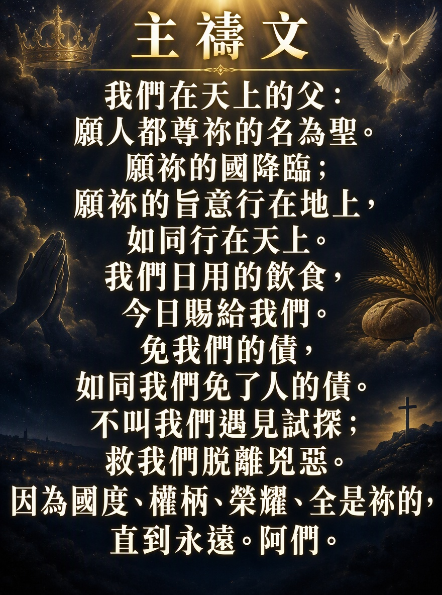
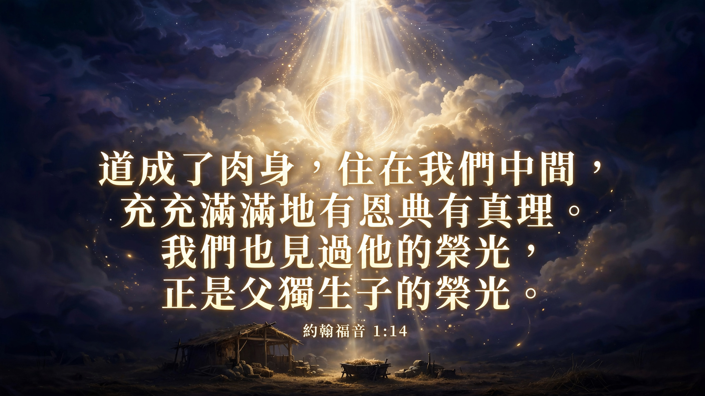
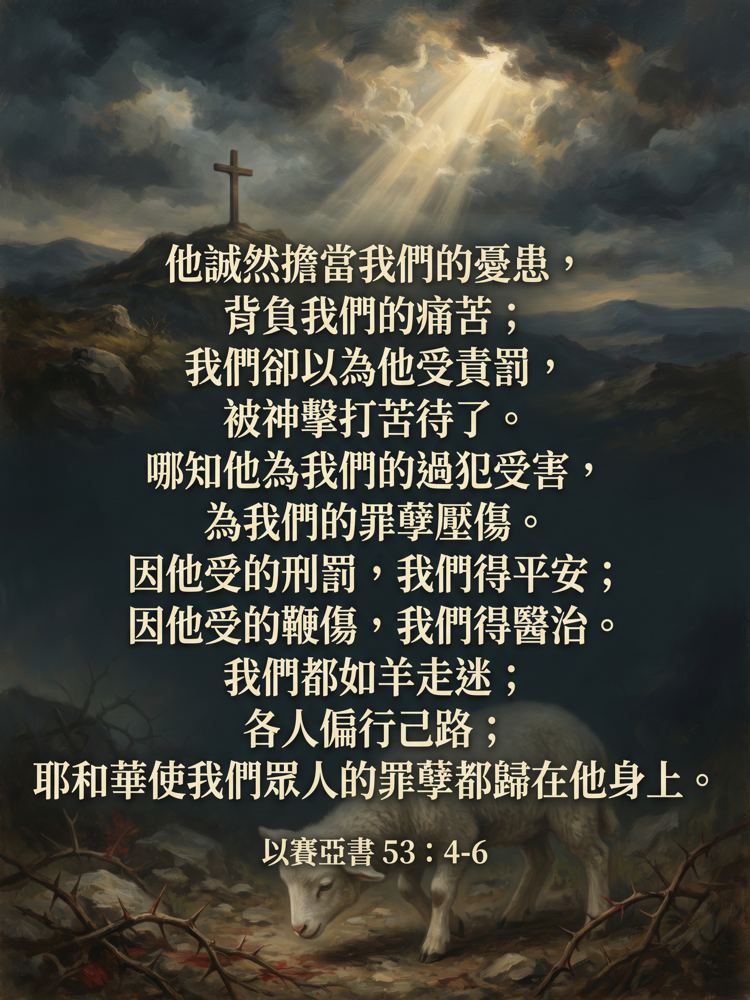
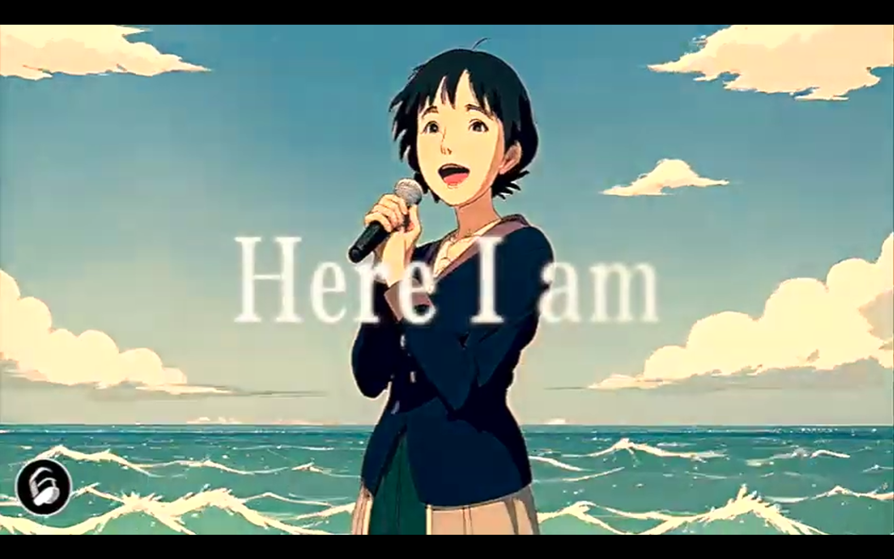
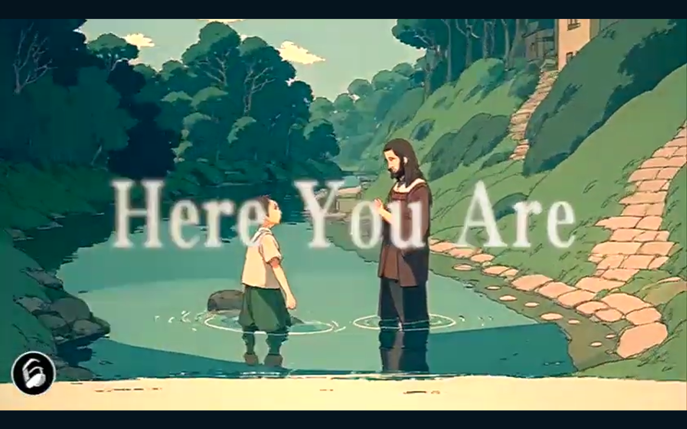
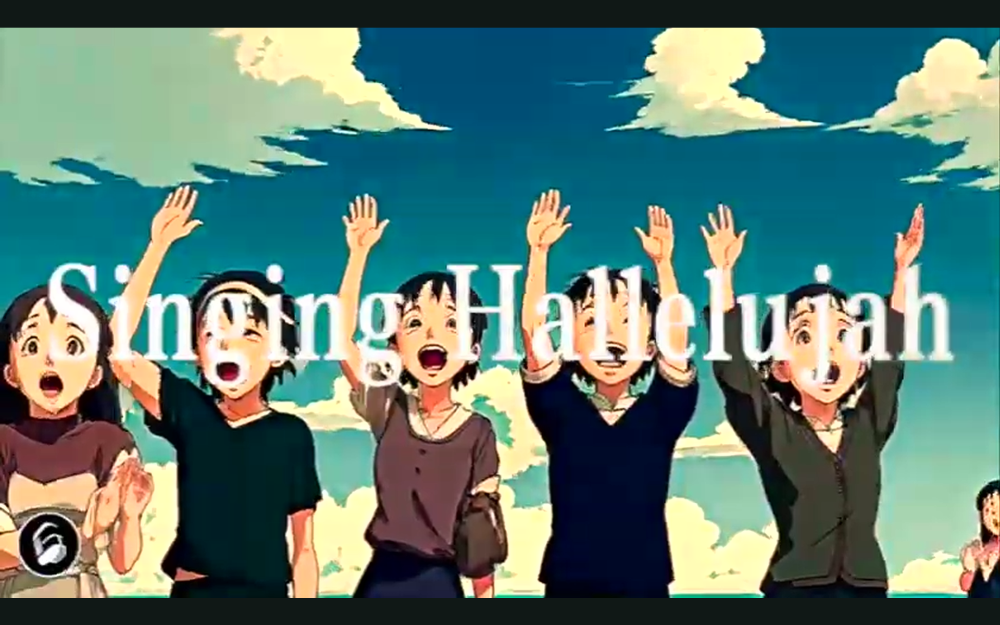

我們在天上的父
...
因為國度、權柄、榮耀，全是祢的
- 主禱文是耶穌教導我們如何向天父禱告 ... 那麼，耶穌是誰呢？
- 耶穌，祢是誰?
約翰福音 1:14

- 今天將分享一些關於耶穌基督生平的歌曲。
- 第一首 ...
耶穌豈是凡人- 想唱就跟著唱，不想唱的話，就單純聽就好。
何因被祂所惑困？感微妙我心靈更新；
耶穌祂只是凡人，因何令我心靈堅穩？
何因被祂所惑困？心靈內似春雷震撼。
耶穌祂只是凡人，竟然令世界變更。
聽，祂每一句話，能帶有大能力。
我默然地想，默想那每一句話。
何因祂敢於面對？祂行事卻出塵脫俗；
耶穌祂只是凡人，竟然為我舒懷解困！
耶穌祂顯出大愛，點燃著我心頭的光。
耶穌祂豈是凡人，欣然地復活再生。
看，祂每一舉動，除去了苦與憂。
我默然地想，十架那每一顆淚。
看，祂的眼神，神態更具寧靜。
我默然地呼，耶穌我更加想念你。
* 在我年輕的時候，在教會團契裡，我們常唱
耶穌是我‵知心友
耶穌是我的知心友 祂知道我深透
細心帶領我向天路走 祂牽扶著我手
我向祂傾訴我憂與愁 我信祂必去困憂
永記祂因我將寶血流 我靈得拯救
耶穌是我的知心友 明我祈求或苦與憂
神到處將我施恩救 慈愛永遠伴我走
在這世界道路多歧途 誰明白我主恩高
曾為我要被死煎與熬 神奇恩我仰慕
我向祂低首向祂渴求 要帶福音往遠處走
願我一生一世跟主腳步 完成主使命
耶穌是我的知心友 明我祈求或苦與憂
神到處將我施恩救 慈愛永遠伴我走
在這世界道路多歧途 誰明白我主恩高
曾為我要被死煎與熬 神奇恩我仰慕
願這福音恩光遍地球 為人所接受
永記祂因我將寶血流 我靈得拯救
- 耶穌是我的知心友 ... 因為祂救了我 ... 永記祂因我將寶血流 我靈得拯救
- 這份救恩，是人們長久以來所渴望的 ... 從以色列人 ... 到所有的人
羅馬書 1:16
猶太人指的是以色列人。 希臘人指的是非猶太人，也就是外邦人。
- 下一首歌是 ...
以馬內利來臨- 誰是以馬內利？
以賽亞書 7:14
以馬內利，懇求降臨，救贖釋放以色列民；
淪落異邦，寂寞傷心，引頸渴望神子降臨。
耶西之條，懇求降臨，撒但手中，釋放子民；
地獄深處，拯救子民，使眾信徒勝過死亡。
清晨日光，懇求降臨，藉主降臨，歡慰眾心；
衝開長夜幽暗愁雲，驅散黑影進入光明。
大衛之鑰，懇求降臨，大開我眾天上家庭；
安排我眾登天路程，斷絕人間多愁苦徑。
副歌：歡欣！歡欣！以色列民，以馬內利，定要降臨！
浪子的比喻(路加福音 15:11-32)浪子的我，正是每一個在罪中迷失的人，而父親的愛，正是上帝對我們的接納與救贖。
- 耶穌在三十三歲時，為了我們的罪被釘在十字架上。
以賽亞書 53:4-6

- 耶穌為我們的罪受苦，承擔了我們的痛苦，這是上帝對我們的愛的極致表現。
- 耶穌為我們走上 苦難之路 Via Dolorosa ... 全為愛不退半步，決定走上苦難之路，殘酷傷害，無悔經過，作犧牲，正為你我。
人浪翻騰，士兵穿插，千夫指向這個祂，
受死前被鞭打，劇痛掙扎，
昨日歡呼的群眾，正在冷嘲戲弄唾罵欺壓。
遍體傷痕，額角淌血，荊棘冠冕正刺穿，
承受世人罪債的沉重身影，
步步艱辛的路徑，背負四周冷酷肆虐呼聲。
榮耀君王，救主基督，性命以十架結束，
無罪羔羊何故遭宰殺凌辱，
全為愛不退半步，決定走上苦難之路，
殘酷傷害，無悔經過，作犧牲，正為你我。
窄路被血洗，實踐神大計，無價贖罪救恩，發自各各他，
榮耀君王，救主基督，性命以十架結束，
無罪羔羊何故任屠宰侮辱，
為著愛不退半步，決定走上苦難之路，
曾在Via Dolorosa，喝苦杯，正為你我。
全為愛不退半步，決定走上苦難之路，殘酷傷害，無悔經過，作犧牲，正為你我。
- 主耶穌，我感謝你，你的身體，為我而捨。
主耶穌，我感謝你，你的身體，為我而捨。
帶我出黑暗，進入光明國度，使我再次能看見。
主耶穌，我感謝你，你的寶血，為我而流。
寶貴十架上，醫治恩典湧流，使我完全得自由。
寶貴十架的大能賜我生命，主耶穌我俯伏敬拜你。
寶貴十架的救恩，是你所立的約，你的愛永遠不會改變。
- 三天後，他復活了。
- 這是上帝對人類罪的最終勝利，象徵著生命戰勝死亡，光明戰勝黑暗。
- 耶穌基督依然活著 ... 因著耶穌基督，我們擁有這份 榮耀的盼望。
到那日這首歌描述了末日的景象，信徒在神面前敬拜，萬國都屈膝，所有的眼淚都被抹去。
[Verse 1]
到那日我站於玻璃海
到那日晝夜唱聖哉
樂奏起天軍讚美
萬國都屈膝向地
我望見座前是我主一張臉
[Verse 2]
到那日我列身眾聖民
到那日我明了救恩
過去的終於過去
祢抹乾所有眼淚
一切更新了祢聖光今普照
[Chorus]
悠揚歌聲諸天都可聽
永永遠遠也為榮耀祢聖名
隨着天兵宣稱主得勝
四處敬拜這天籟聲永沒停
Here I am -- 我在這裡

Here you are -- 你在這裡

Singing Hallelujah -- 唱哈利路亞
